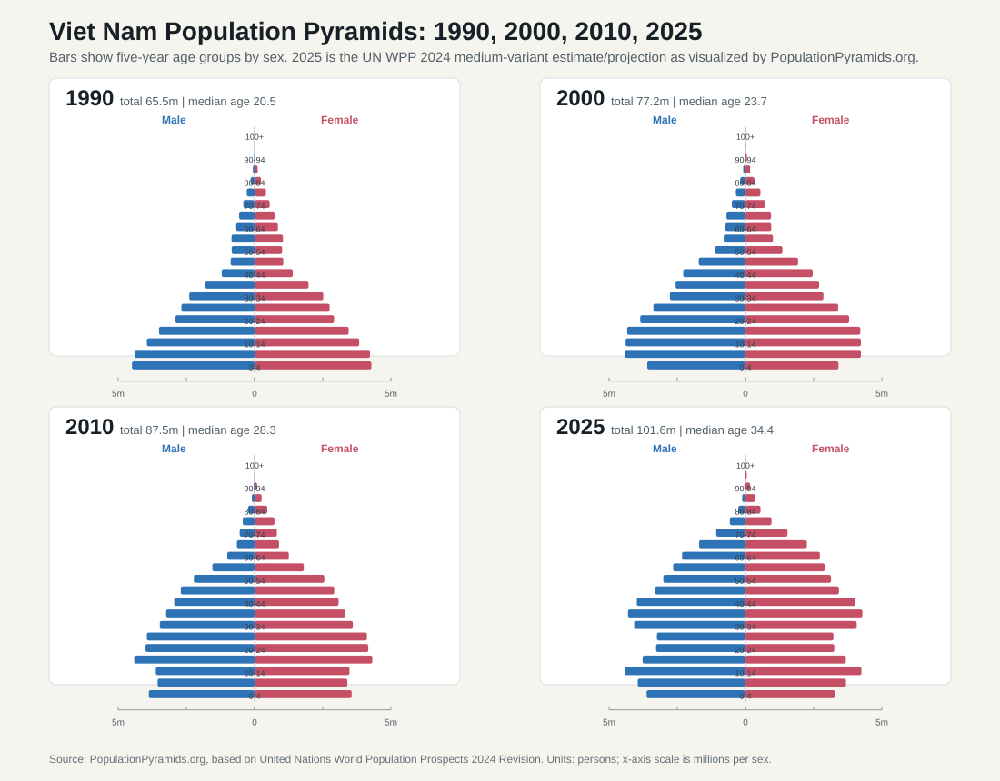
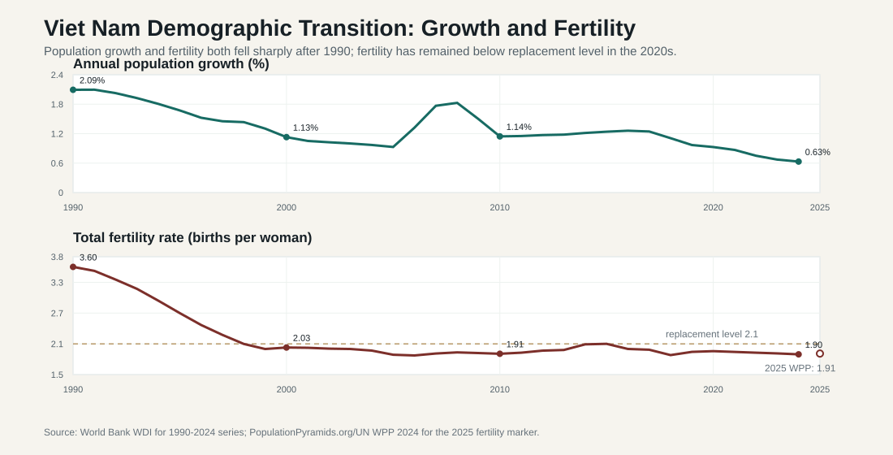

8.1 Population Scale and Age Structure
ASEAN comparative lens (2026). Vietnam should be read in ASEAN comparison as ASEAN's most prominent party-led, export-manufacturing upgrading case. Unlike the Philippines' service-remittance profile, Thailand's older industrial-tourism base, Malaysia's resource-industrial federal structure, or Indonesia's archipelagic domestic-market scale, Vietnam's comparative issue is how a socialist party-state manages very open global production networks. For this section, the regional comparison should compare demographic pressure, urbanization, migration, ethnicity, language, religion, and territorial inequality across maritime, mainland, city-state, and landlocked ASEAN settings. Local comparable indicators show: population 100.99 million (2024), rank 3 among the nine ASEAN reports in this workspace; GDP US$476.39 billion (2024), rank 4 among the nine ASEAN reports in this workspace; GDP per capita US$4,717 (2024), rank 5 among the nine ASEAN reports in this workspace; real GDP growth 7.09% (2024), rank 1 among the nine ASEAN reports in this workspace; government effectiveness 0.09 (2023), rank 6 among the nine ASEAN reports in this workspace; internet use 84.15% (2024), rank 4 among the nine ASEAN reports in this workspace. Use `sources/documents/regional/asean_comparative_lens_2026.md` together with ASEANstats, ASEAN Secretariat materials, and the country processed-indicator files before making cross-ASEAN claims.
Viet Nam's population structure is not only a demographic background variable. It defines the scale of the state itself: how many children must be educated, how many workers must be employed and protected, how many older citizens will need health care and pensions, how large urban-service systems must become, and how far public administration must reach across territory. The latest processed World Bank WDI evidence in this project places the population at 100.99 million in 2024. The 2025 population pyramid below uses the UN World Population Prospects 2024 medium-variant estimate/projection as visualized by PopulationPyramids.org, which places the 2025 population at about 101.60 million and the median age at 34.4 years. The two sources are used for different purposes: WDI is retained for the annual indicator series, while the UN WPP age-sex structure is used for the pyramid visualization.
The main demographic story is a transition from labor abundance to aging under conditions of continued development pressure. In 2024, the working-age population share remained high at 67.7 percent, while the youth share stood at 23.2 percent and the 65-and-over share at 9.0 percent. This means Viet Nam still has a substantial working-age base, but the demographic dividend is narrowing. Fertility was 1.895 births per woman in 2024, below replacement level. Population growth was about 0.63 percent. The result is a state that must simultaneously support industrial upgrading, youth opportunity, and preparation for old-age welfare.

The 1990 pyramid shows a classic post-war and early reform-period structure: a broad base, a very large child population, and relatively small elderly cohorts. Administratively, this was the age structure of school expansion, basic health provision, rural employment absorption, and rapid labor-force entry. The state had to build human capital for a very young population while still operating with limited fiscal capacity and incomplete service infrastructure.
By 2000 the base had narrowed, but the lower and middle age bands were still large. This was the beginning of a more favorable dependency structure. Fewer births reduced pressure on the youngest cohorts, while large cohorts entered working age. The administrative challenge therefore shifted from simply absorbing population growth toward expanding lower-secondary education, vocational training, urban employment, and labor-intensive industrial zones.
The 2010 pyramid captures the demographic dividend more clearly. The largest cohorts were concentrated in working ages, while the child share had fallen and the elderly share remained limited. This structure supported export manufacturing, domestic migration, and rapid urban growth. But it also created a policy deadline: if a country does not raise productivity, skills, and social insurance coverage while the working-age share is high, the dividend can be consumed before it is institutionalized.
The 2025 pyramid is no longer expansive in the old sense. The base is narrower, the 30-49 age bands are thick, and the upper age bands are visibly wider. This does not mean Viet Nam is already an old society in the same way as Japan, Korea, or some European countries, but it does mean that aging has become a national administrative problem. Health finance, pensions, community care, elderly-friendly local services, and labor productivity now belong at the center of population policy.

The trend chart makes the same point in time-series form. In 1990 Viet Nam still had high demographic momentum: annual population growth exceeded 2 percent and fertility was 3.60 births per woman. By 2000 fertility had fallen to about replacement level, and by 2010 it was already below replacement. Population growth did not collapse immediately because large earlier cohorts continued to move through childbearing and working ages, but the long-term direction was clear. By 2024 the WDI series shows population growth at only 0.63 percent and fertility at 1.895 births per woman. The 2025 WPP/PopulationPyramids fertility marker is close, at 1.91 births per woman.
This combination is politically and administratively important because the timing of demands changes. When fertility falls, pressure on primary-school expansion gradually eases, but demand for tertiary education, skills training, housing, urban transport, employment services, and social insurance rises. When growth slows and aging advances, the state loses the easy option of solving economic problems by simply mobilizing ever-larger young cohorts. Policy success depends increasingly on productivity, formalization, labor mobility, health-system capacity, and pension sustainability.
| Indicator | 2024 value | Administrative meaning |
|---|---|---|
| Total population | 100.99 million | Large service-delivery, infrastructure, housing, education, and health-care task. |
| Annual population growth | 0.63 percent | Continued growth, but no longer the high-growth demographic environment of earlier development decades. |
| Fertility rate | 1.895 births per woman | Long-term pressure on labor supply, school networks, family policy, and pension sustainability. |
| Ages 0-14 | 23.2 percent | Education and child-health demand remain large, but the youth share is declining. |
| Ages 15-64 | 67.7 percent | Labor force remains the core development asset, but productivity now matters more than simple labor abundance. |
| Ages 65+ | 9.0 percent | Aging is becoming a national policy problem for pensions, health care, elderly care, and local services. |
| Young dependency ratio | 34.3 per 100 working-age people | Schools, child welfare, and family services remain major expenditure areas. |
| Old-age dependency ratio | 13.4 per 100 working-age people | Still moderate, but rising pressure on social insurance and health finance is already visible. |
The first implication is fiscal. A young population requires schools, maternal and child health, vocational training, and job creation. An aging population requires pensions, chronic-disease management, long-term care, community health systems, and age-friendly local services. Viet Nam must finance both agendas while also investing in infrastructure, climate adaptation, digital government, industrial policy, and defense. Demography therefore turns into a public-finance problem: if revenue mobilization and expenditure efficiency do not improve, the state may face a squeeze between development investment and social protection.
The second implication is labor-market strategy. Viet Nam's export manufacturing success benefited from a large and relatively young labor force. That advantage is no longer enough. A lower fertility path means the future labor market cannot rely on endless rural-to-urban labor transfer. Industrial upgrading requires productivity growth, better technical education, management capability, automation readiness, higher female labor-force participation, and stronger adult reskilling. Demography therefore changes the meaning of industrial policy. The central question becomes whether the state can move workers from low-productivity agriculture, informal services, and low-wage assembly into higher-value production and services.
The third implication is administrative targeting. National averages conceal very different local problems. Some industrial and metropolitan areas face labor inflows, housing pressure, school crowding, public transport demand, and environmental stress. Some rural and upland areas face outmigration, aging villages, weaker tax bases, and service-maintenance problems. The same demographic trend can therefore produce opposite local tasks: expanding urban infrastructure in one place and sustaining basic services in a shrinking locality elsewhere. A capable administrative system must see both.
The fourth implication is political. Population aging changes the social contract. A developmental state often builds legitimacy by delivering growth, jobs, infrastructure, and poverty reduction. As the population ages, citizens also judge the state by health security, pensions, elderly care, and the fairness of social insurance. If formal workers receive better protection than informal or migrant workers, demographic aging can sharpen social inequality. If rural elderly people depend heavily on family support while young workers migrate, the burden of care becomes both a household problem and a local-government problem.
Viet Nam's demographic challenge cannot be captured by the labels "too many people" or "too few births." It is the interaction of scale, aging, labor mobility, regional imbalance, welfare demand, and state capacity. The country still has a working-age advantage, but that advantage must be converted into productivity before aging accelerates. For this book, population is therefore treated as a test of administrative conversion: can the party-state translate a favorable but narrowing demographic window into skills, social protection, urban management, and territorial equity?